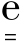

霁野兄：
八月九日信早到。静农的一信一信片亦到，但他至今尚未来。
《41》五本，《文艺论断片》[115]五本，亦已到。
合记是文〖房〗具店，他所托的卖书处，也大概是互相交易的文具店，并且常派人去收账，所以未名社是不能直接交涉的。
未名社要登广告，朝花社可以代办。但我想，须于书籍正到上海发卖时，登出来，则更好。
北新脾气，日见其坏，我已请律师和他们开一个小玩笑，我实在忍耐不下去了。
上海到处都是商人气（北新也大为商业化了），住得真不舒服，但北京也是畏途，现在似乎是非很多，我能否以著书生活，恐怕也是一个疑问，北返否只能将来再看了。
《关于鲁迅及其著作》，不知北京尚有存书否？如有，希即寄一本往法国，地址录下。已寄与否，并希便中见告。
迅 上 八月二十夜
Monsieur Ki Tchejen，
10 rue Jules Dumien 10，
Paris（20

），France.[116]
注 释
[115] 《41》 即《第四十一》，参看290322①信注〔5〕。《文艺论断片》，即《近代文艺批评断片》，法国法朗士等著，李霁野辑译，1929年7月未名社出版。
[116] 法文：法国巴黎（20区）瑞莱·迪米安路十号季志仁先生。季志仁（1902—？），江苏常熟人。当时在法国留学。鲁迅曾托他购买书籍和版画。